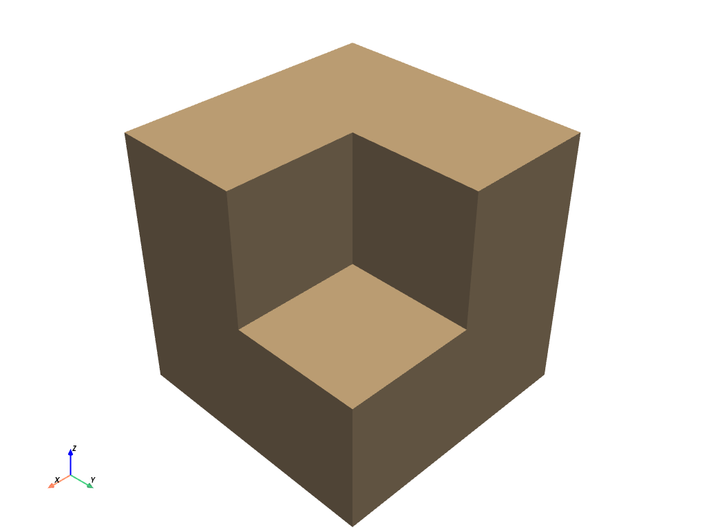

clip_box#
- MultiBlock.clip_box(bounds=None, invert=True, factor=0.35, progress_bar=False, merge_points=True, crinkle=False)#
境界によって定義された境界ボックスによってデータセットをクリップします．
境界が指定されていない場合，データセット境界のコーナーは削除されます．
- パラメータ
- bounds
tuple(float),optional floatの長さ6のシーケンス:(xmin，xmax，ymin，ymax，zmin，zmax)．長さ3のfloatシーケンス:入力メッシュの最小座標からの距離．単一のfloat値:最小座標からの均一な距離．レングス12のシーケンス，レングス3のシーケンス，フロートのシーケンス:平面コレクション(法線，中心， ...)．
pyvista.PolyData: :標準のボックスを形成する6つの面を持つボックスを表すポリゴンメッシュが渡されると，そのボックスから平面が抽出され，クリッピング領域が定義されます．- invertbool,
optional クリップをフリップ/反転するかどうかを示すフラグ．
- factor
float,optional 境界が指定されていない場合，これはデフォルトボックスを抽出する各軸に沿った係数になります．
- progress_barbool,
optional 進行状況を示す進行状況バーを表示します．
- merge_pointsbool,
optional True(デフォルト) の場合，独立して定義されたメッシュ要素の一致する点がマージされます．- crinklebool,
optional クリップに沿ったセル全体を抽出してクリップをしわくちゃにします．これは，
cell_data属性に"cell_ids"という配列を追加し，元のデータセットのセルIDを追跡するものです．
- bounds
- 戻り値
pyvista.UnstructuredGrid切り取られたデータセット．
例
立方体のコーナーをクリップします．立方体の境界は通常
[-0.5, 0.5, -0.5, 0.5, -0.5, 0.5]であり，これは立方体の表面の1/8を除去します．>>> import pyvista as pv >>> cube = pv.Cube().triangulate().subdivide(3) >>> clipped_cube = cube.clip_box([0, 1, 0, 1, 0, 1]) >>> clipped_cube.plot()

このフィルターを使ったその他の例については， 平面とボックスでクリップします を参照してください．